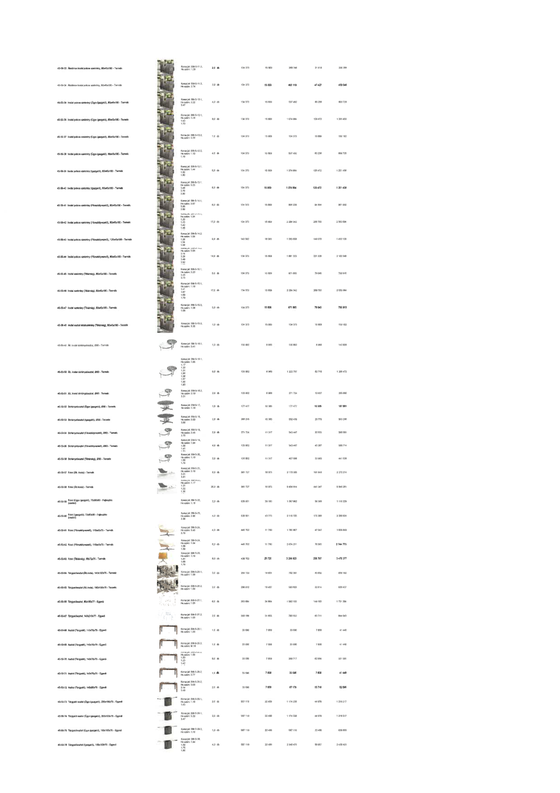

| Tétel | Megjegyzés | Menny. | Egys. | Anyag e.ár (net HUF) | Díj e.ár (net HUF) | Anyag összesen (net HUF) | Díj összesen (net HUF) | Anyag+Díj összesen (net HUF) |
|---|---|---|---|---|---|---|---|---|
| 45-50-34 Általános irodai polcos szekrény, 82x45x180 - Termék | Konszig jel: BM-5-11.2 | 2,0 | db | 134 373 | 15 809 | 268 746 | 31 618 | 300 364 |
| 45-50-35 Általános irodai polcos szekrény, 82x45x180 - Termék | Konszig jel: BM-5-11.3 | 3,0 | db | 134 373 | 15 809 | 403 119 | 47 427 | 450 546 |
| 45-50-36 Irodai polcos szekrény (Ügyv. igazgató), 82x45x180 - Termék | Konszig jel: BM-5-12.1 | 4,0 | db | 134 373 | 15 809 | 537 492 | 63 236 | 600 728 |
| 45-50-37 Irodai polcos szekrény (Ügyv. igazgató), 82x45x180 - Termék | Konszig jel: BM-5-12.1 | 8,0 | db | 134 373 | 15 809 | 1 074 984 | 126 472 | 1 201 456 |
| 45-50-38 Irodai polcos szekrény (Ügyv. igazgató), 82x45x180 - Termék | Konszig jel: BM-5-12.2 | 1,0 | db | 134 373 | 15 809 | 134 373 | 15 809 | 150 182 |
| 45-50-39 Irodai polcos szekrény (Ügyv. igazgató), 82x45x180 - Termék | Konszig jel: BM-5-12.2 | 4,0 | db | 134 373 | 15 809 | 537 492 | 63 236 | 600 728 |
| 45-50-40 Irodai polcos szekrény (Igazgató), 82x45x180 - Termék | Konszig jel: BM-5-13.1 | 8,0 | db | 134 373 | 15 809 | 1 074 984 | 126 472 | 1 201 456 |
| 45-50-41 Irodai polcos szekrény (Igazgató), 82x45x180 - Termék | Konszig jel: BM-5-13.1 | 8,0 | db | 134 373 | 15 809 | 1 074 984 | 126 472 | 1 201 456 |
| 45-50-42 Irodai polcos szekrény (Főosztályvezető), 82x45x180 - Termék | Konszig jel: BM-5-14.1 | 6,0 | db | 134 373 | 15 809 | 806 238 | 94 854 | 901 092 |
| 45-50-43 Irodai polcos szekrény (Főosztályvezető), 82x45x180 - Termék | Konszig jel: BM-5-14.1 | 17,0 | db | 134 373 | 15 809 | 2 284 342 | 268 753 | 2 553 094 |
| 45-50-44 Irodai polcos szekrény (Főosztályvezető), 120x45x180 - Termék | Konszig jel: BM-5-14.2 | 9,0 | db | 142 562 | 16 563 | 1 283 058 | 149 070 | 1 432 128 |
| 45-50-45 Irodai polcos szekrény (Főosztályvezető), 82x45x180 - Termék | Konszig jel: BM-5-14.2 | 14,0 | db | 134 373 | 15 809 | 1 881 223 | 221 326 | 2 102 549 |
| 45-50-46 Irodai szekrény (Titkárság), 82x45x180 - Termék | Konszig jel: BM-5-15.1 | 5,0 | db | 134 373 | 15 809 | 671 865 | 79 045 | 750 910 |
| 45-50-47 Irodai szekrény (Titkárság), 82x45x180 - Termék | Konszig jel: BM-5-15.1 | 17,0 | db | 134 373 | 15 809 | 2 284 342 | 268 753 | 2 553 094 |
| 45-50-48 Irodai szekrény (Titkárság), 82x45x180 - Termék | Konszig jel: BM-5-15.2 | 5,0 | db | 134 373 | 15 809 | 671 865 | 79 045 | 750 910 |
| 45-50-49 Irodai asztal oldalszekrény (Titkárság), 82x45x180 - Termék | Konszig jel: BM-5-15.3 | 1,0 | db | 134 373 | 15 809 | 134 373 | 15 809 | 150 182 |
| 45-50-50 Ált. irodai dohányzóasztal, Ø80 - Termék | Konszig jel: BM-5-16.1 | 1,0 | db | 135 862 | 6 966 | 135 862 | 6 966 | 142 828 |
| 45-50-51 Ált. irodai dohányzóasztal, Ø80 - Termék | Konszig jel: BM-5-16.1 | 9,0 | db | 135 862 | 6 969 | 1 222 757 | 62 715 | 1 285 472 |
| 45-50-52 Ált. irodai dohányzóasztal, Ø80 - Termék | Konszig jel: BM-5-16.2 | 2,0 | db | 135 862 | 6 969 | 271 724 | 13 937 | 285 660 |
| 45-50-53 Dohányzóasztal (Ügyv. igazgató), Ø80 - Termék | Konszig jel: BM-5-17 | 1,0 | db | 177 477 | 10 385 | 177 477 | 10 385 | 187 861 |
| 45-50-54 Dohányzóasztal (Igazgató), Ø80 - Termék | Konszig jel: BM-5-18 | 2,0 | db | 266 215 | 10 385 | 532 431 | 20 770 | 553 200 |
| 45-50-55 Dohányzóasztal (Főosztályvezető), Ø80 - Termék | Konszig jel: BM-5-19 | 2,0 | db | 271 724 | 11 317 | 543 447 | 22 633 | 566 081 |
| 45-50-56 Dohányzóasztal (Főosztályvezető), Ø80 - Termék | Konszig jel: BM-5-19 | 4,0 | db | 135 862 | 11 317 | 543 447 | 45 267 | 588 714 |
| 45-50-57 Dohányzóasztal (Titkárság), Ø80 - Termék | Konszig jel: BM-5-20 | 3,0 | db | 135 862 | 11 317 | 407 586 | 33 950 | 441 536 |
| 45-50-58 Fotel (Ált. iroda) - Termék | Konszig jel: BM-5-21 | 6,0 | db | 361 727 | 16 975 | 2 170 365 | 101 849 | 2 272 214 |
| 45-50-59 Fotel (Ált. iroda) - Termék | Konszig jel: BM-5-21 | 26,0 | db | 361 727 | 16 975 | 9 404 914 | 441 347 | 9 846 261 |
| 45-50-60 Fotel (Ügyv. igazgató), 73x60x80 - Fejlesztés | Konszig jel: BM-5-22 | 2,0 | db | 528 931 | 29 183 | 1 057 862 | 58 366 | 1 116 228 |
| 45-50-61 Fotel (Igazgató), 73x60x80 - Fejlesztés | Konszig jel: BM-5-23 | 4,0 | db | 528 931 | 43 775 | 2 115 723 | 175 101 | 2 290 824 |
| 45-50-62 Fotel (Főosztályvezető), 110x83x75 - Termék | Konszig jel: BM-5-24 | 4,0 | db | 445 702 | 11 760 | 1 782 807 | 47 042 | 1 829 849 |
| 45-50-63 Fotel (Főosztályvezető), 110x83x75 - Termék | Konszig jel: BM-5-24 | 6,0 | db | 445 702 | 11 760 | 2 674 211 | 70 563 | 2 744 773 |
| 45-50-64 Fotel (Titkárság), 65x72x70 - Termék | Konszig jel: BM-5-25 | 8,0 | db | 408 702 | 25 720 | 3 269 620 | 205 757 | 3 475 377 |
| 45-50-65 Tárgyalóasztal (Ált. iroda), 140x100x75 - Termék | Konszig jel: BM-5-26.1 | 3,0 | db | 264 130 | 14 601 | 792 391 | 43 802 | 836 192 |
| 45-50-66 Tárgyalóasztal (Ált. iroda), 160x100x75 - Termék | Konszig jel: BM-5-26.2 | 2,0 | db | 296 812 | 16 407 | 593 623 | 32 814 | 626 437 |
| 45-50-67 Tárgyalóasztal, Ø818x77 - Egyedi | Konszig jel: BM-5-27.1 | 6,0 | db | 263 684 | 24 854 | 1 582 102 | 149 123 | 1 731 224 |
| 45-50-68 Tárgyalóasztal, 142x210x77 - Egyedi | Konszig jel: BM-5-27.2 | 2,0 | db | 391 666 | 31 855 | 783 332 | 63 711 | 847 043 |
| 45-50-69 Asztal (Tárgyaló), 140x70x75 - Egyedi | Konszig jel: BM-5-28.1 | 1,0 | db | 33 590 | 7 858 | 33 590 | 7 858 | 41 448 |
| 45-50-70 Asztal (Tárgyaló), 140x70x75 - Egyedi | Konszig jel: BM-5-28.2 | 1,0 | db | 33 590 | 7 858 | 33 590 | 7 858 | 41 448 |
| 45-50-71 Asztal (Tárgyaló), 140x70x75 - Egyedi | Konszig jel: BM-5-28.2 | 8,0 | db | 33 590 | 7 858 | 268 717 | 62 864 | 331 581 |
| 45-50-72 Asztal (Tárgyaló), 140x70x75 - Egyedi | Konszig jel: BM-5-28.2 | 1,0 | db | 33 590 | 7 858 | 33 590 | 7 858 | 41 448 |
| 45-50-73 Asztal (Tárgyaló), 140x80x75 - Egyedi | Konszig jel: BM-5-28.2 | 2,0 | db | 33 590 | 7 858 | 67 179 | 15 716 | 82 895 |
| 45-50-74 Tárgyaló asztal (Ügyv. igazgató), 250x130x75 - Egyedi | Konszig jel: BM-5-29.1 | 2,0 | db | 587 119 | 22 489 | 1 174 238 | 44 978 | 1 219 217 |
| 45-50-75 Tárgyaló asztal (Ügyv. igazgató), 250x130x75 - Egyedi | Konszig jel: BM-5-29.1 | 2,0 | db | 587 119 | 22 489 | 1 174 238 | 44 978 | 1 219 217 |
| 45-50-76 Tárgyalóasztal (Ügyv. igazgató), 180x100x75 - Egyedi | Konszig jel: BM-5-29.2 | 1,0 | db | 587 119 | 22 489 | 587 119 | 22 489 | 609 608 |
| 45-50-77 Tárgyalóasztal (Igazgató), 180x100x75 - Egyedi | Konszig jel: BM-5-30 | 4,0 | db | 587 119 | 22 489 | 2 348 475 | 89 957 | 2 438 433 |
